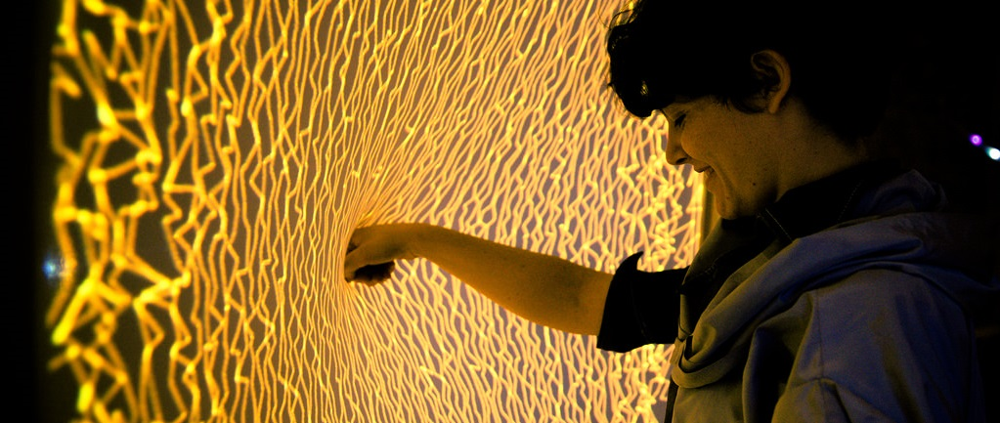
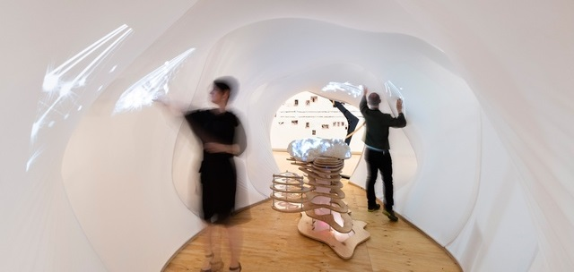

Project Influences
Firewall - Michael Allison and Aaron Sherwood
The concept behind MozART is inspired by a number of different installations that combine human touch on physical surfaces with dynamic audio and visuals that can be manipulated in real-time. The primary inspiration for the project is the Firewall, designed and built by Michael Allison and Aaron Sherwood. Firewall is a large installation designed to provide a fun and abstract avenue for performing music. The installation reacts to how people touch the Lycra canvas, changing the rate of arpeggiation and velocity of the MIDI notes based on the depth of the touch. Powering this interaction is a Microsoft Kinect which measures the changes in distance between the surface and the device, which then responds by projecting a visual representation.
More information about Firewall can be found here: http://aaron-sherwood.com/blog/?p=558
Sulcus Loci - The University of Queensland
MozART was also inspired by the Sulcus Loci installation, previously on display at the State Library of Queensland as part of the Asia Pacific Architecture Forum exhibit. Sulcus Loci was created with the combined effort of Masters students from The University of Queensland, studying in the disciplines of Architecture, Multimedia Design, and Interaction Design. This interaction also takes advantage of the Kinect technology to detect distance and redisplay a visual representation of touch onto the surface. Additionally, it reacts to duration of the touch from users, creating an explosion if they touch the canvas for long enough.
More information about Sulcus Loci can be found here: http://www.architecture.uq.edu.au/sulcus-loci-installation-exhibited-state-library-queensland
Both of these installations utilise similar technologies to the MozART installation, however neither of these interactions are built around the idea of providing a multi-user multi-instrument interaction to create an immersive musical experience. Our aim was to build upon the Firewall installation, improving the ways users are able to augment instrument sounds using physical interactions. We wanted to create an ensemble experience, letting multiple people play at the same time, allowing each to control a different component of the performance. Further exploration of the installation is encouraged by prompting users to connect and communicate with each other through their own musical expression.